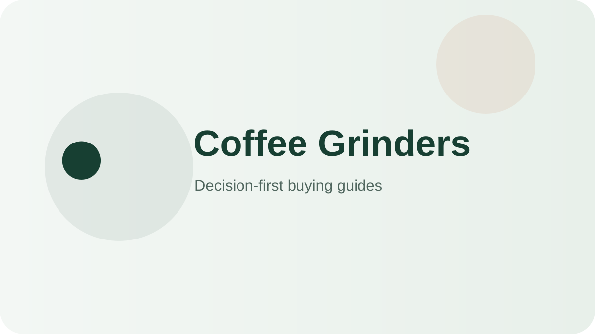

Best all-round burr grinder
Baratza Encore ESP ZCG495BLK
You brew both espresso and filter coffee.
Check on AmazonChoose coffee grinders by burr consistency, adjustment range, retention, noise, and ease of cleaning—not by feature count alone.

These products cover distinct use cases so you can quickly rule in—or rule out—the right format.
You brew both espresso and filter coffee.
Check on Amazon
You want low-friction daily drip/pour-over grinding.
Check on Amazon
Filter coffee is your priority.
Check on Amazon
You want a basic burr grinder cheaply.
Check on Amazon
Budget and compactness matter most.
Check on AmazonYou want a true burr upgrade with timer dosing on a budget.
Check on AmazonYou need cheap grinding for drip, spices, and small jobs.
Check on AmazonA decision-first shortlist for everyday buyers, with clear trade-offs instead of feature-count rankings.
Read guide →Compact picks and space-saving buying rules for apartments, dorms and crowded counters.
Read guide →Larger-capacity options and the capacity rules that matter when several people share one appliance.
Read guide →Value-focused picks that prioritize the features you actually use and skip expensive extras.
Read guide →A practical guide to sizing, features, cleanup, durability and avoiding overbuying.
Read guide →A side-by-side decision framework for separating meaningful differences from marketing noise.
Read guide →A practical after-use routine, deep-cleaning schedule and part-replacement plan that keeps a coffee grinder performing like new for years.
Read guide →The most common ways buyers overspend or under-buy when choosing a coffee grinder, with the decision rule that prevents each one.
Read guide →A line-item look at what higher prices buy in coffee grinders, when the upgrade pays off daily, and when the budget pick is the smarter move.
Read guide →